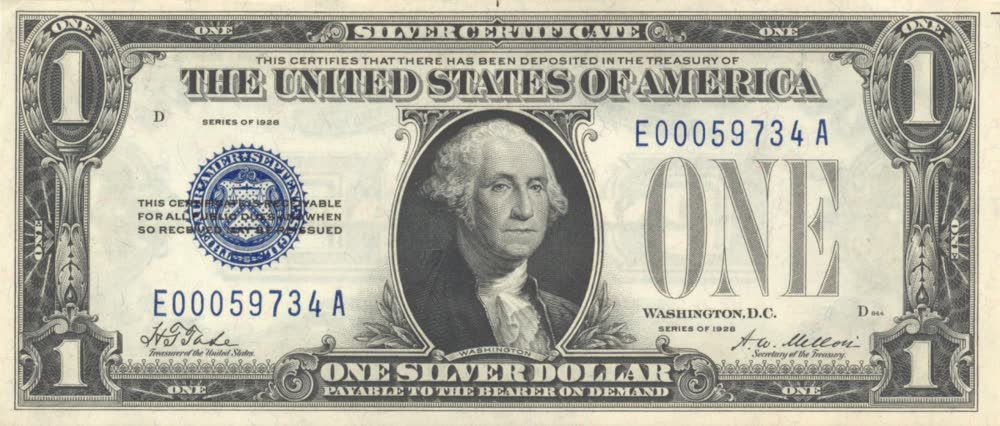

달러의 역사 — 어떻게 세계의 돈이 되었나The History of the Dollar — How It Became the World's Money
- 기축통화란 세계 무역과 금융에서 기준으로 쓰이는 돈이고, 지금은 미국 달러입니다.A key currency is the standard money for world trade and finance; today it is the US dollar.
- 1944년 브레턴우즈에서 달러가 중심이 되었고, 1971년 금과 끊긴 뒤에도 그 자리를 지켰습니다.It became central at Bretton Woods in 1944 and kept its place even after leaving gold in 1971.
- 달러가 강해지면 원/달러 환율이 오르고, 수입 물가와 해외 여행비가 비싸집니다.When the dollar strengthens, the won-dollar rate rises, and imports and overseas travel become more expensive.
뉴스에서 "환율이 1,400원을 넘었다"는 말을 들으면 무슨 뜻인지 헷갈릴 때가 많습니다. 원/달러 환율은 1달러를 사려면 원화가 얼마 필요한지를 뜻합니다. 왜 하필 달러가 기준일까요? 그 답은 달러의 역사에 있습니다.When the news says "the exchange rate passed 1,400 won," it can be confusing. The won-dollar rate is how many won you need to buy one dollar. Why is the dollar the standard? The answer lies in its history.
1. 달러의 시작
1. The birth of the dollar'달러'라는 이름은 16세기 보헤미아(지금의 체코) 요아힘스탈에서 만든 은화 '탈러(Thaler)'에서 왔다고 합니다. 미국은 1792년 화폐법(Coinage Act)으로 달러를 공식 화폐 단위로 정했습니다. 1913년에는 미국 중앙은행인 연방준비제도(연준, Fed)가 만들어져 오늘날까지 달러의 양과 금리를 조절하고 있습니다.The word "dollar" comes from the "Thaler," a silver coin made in Joachimsthal, Bohemia (now Czechia), in the 16th century. The US made the dollar its official unit by the Coinage Act of 1792. In 1913 the Federal Reserve (the Fed) was created; it still manages the amount of dollars and interest rates.

2. 1944년 브레턴우즈 — 달러가 중심이 되다
2. Bretton Woods, 1944 — the dollar at the center두 번의 세계대전을 거치며 미국은 세계 금의 많은 부분을 갖게 되었습니다. 1944년 브레턴우즈 회의에서 달러는 금 1온스=35달러로 바꿔 주고, 다른 나라 돈은 달러에 고정하기로 했습니다. 국제통화기금(IMF)과 세계은행도 이때 만들어졌습니다. 이로써 달러는 세계 돈의 중심, 곧 기축통화가 되었습니다.After two world wars, the US held much of the world's gold. At Bretton Woods in 1944, the dollar was set at $35 per ounce of gold, and other currencies were pegged to the dollar. The IMF and World Bank were created too. The dollar became the key (reserve) currency.

3. 1971년 닉슨 쇼크 이후
3. After the 1971 Nixon shock미국이 금보다 많은 달러를 찍어내자 다른 나라들이 달러를 금으로 바꿔 달라고 요구했습니다. 1971년 미국은 금 교환을 멈추었고, 1973년부터 주요 통화는 시장에서 값이 정해지는 변동환율제로 바뀌었습니다. 많은 사람이 "이제 달러의 시대는 끝났다"고 했지만, 달러는 여전히 세계의 기준으로 남았습니다.As the US printed more dollars than its gold, other countries asked to exchange dollars for gold. In 1971 the US stopped, and from 1973 major currencies moved to floating exchange rates. Many said the dollar era was over, but it remained the world's standard.
4. 석유와 달러 — 페트로달러
4. Oil and the dollar — the petrodollar1970년대 미국과 사우디아라비아의 협력 이후 국제 원유는 주로 달러로 거래되었습니다. 석유를 사려면 달러가 필요하니 세계 각국이 달러를 쌓아 두게 되었고, 산유국은 번 달러로 미국 국채를 사는 흐름이 생겼습니다. 이것을 흔히 페트로달러라고 부릅니다.After US–Saudi cooperation in the 1970s, oil was traded mostly in dollars. Countries needed dollars to buy oil, and oil producers used their dollars to buy US bonds. This is often called the petrodollar.
5. 1985년 플라자 합의
5. The Plaza Accord, 19851980년대 초 달러가 너무 강해 미국 수출이 어려워지자, 1985년 미국·일본·서독·프랑스·영국이 뉴욕 플라자 호텔에 모여 달러 값을 낮추기로 합의했습니다. 이후 엔화 값이 크게 올랐고 일본 경제와 자산 거품에도 영향을 주었다는 평가가 많습니다. 환율이 나라 경제를 얼마나 크게 바꾸는지 보여 준 사건입니다.When a strong dollar hurt US exports in the early 1980s, the US, Japan, West Germany, France and Britain met at the Plaza Hotel in 1985 and agreed to lower the dollar. The yen rose sharply, which many say affected Japan's economy and asset bubble.
6. 달러지수와 원/달러 환율 읽는 법
6. Reading the dollar index and the won-dollar rate달러지수(DXY)는 유로, 엔, 파운드 등 주요 6개 통화와 비교한 달러의 힘을 나타내며 1973년 3월을 100으로 합니다. 달러지수가 오르면 "달러가 강해졌다"는 뜻입니다. 원/달러 환율이 1,300원에서 1,400원이 되면 같은 1달러를 사는 데 원화가 더 필요하니 원화가 약해진 것입니다. 이때 수입 물가와 해외 여행비는 오르고, 수출 기업에는 도움이 될 수 있습니다.The dollar index (DXY) measures the dollar against six major currencies, with March 1973 = 100. When it rises, the dollar is stronger. If the won-dollar rate goes from 1,300 to 1,400, you need more won for one dollar, so the won is weaker. Import prices and travel costs rise, while exporters may benefit.
7. 달러는 영원할까
7. Will the dollar last forever?중국 위안화, 유로, 금, 디지털 화폐가 달러의 자리를 넘본다는 이야기는 늘 있습니다. 실제로 각국 중앙은행이 금을 사들이는 흐름도 있었습니다. 그래도 아직 세계 외환보유액과 무역 결제에서 달러의 비중은 가장 큽니다. 기축통화는 하루아침에 바뀌지 않고, 믿음이 쌓이는 데 수십 년이 걸립니다.There is always talk that the yuan, the euro, gold or digital money will replace the dollar, and central banks have bought gold. Still, the dollar has the largest share of world reserves and trade payments. A key currency does not change overnight; trust takes decades to build.
8. 조율사의 비유
8. A tuner's analogy오케스트라에서 오보에가 라(A)를 불면 모든 악기가 그 음에 맞춥니다. 세계 경제에서 그 오보에 역할을 하는 것이 달러입니다. 오보에 음이 흔들리면 오케스트라 전체가 흔들리듯, 달러가 크게 움직이면 세계 금융시장이 함께 출렁입니다.In an orchestra, when the oboe plays an A, every instrument tunes to it. In the world economy, the dollar plays that oboe. When the dollar moves a lot, global financial markets move with it.
📘 오늘의 영어 단어
📘 Today's English words| 영어 | 발음 | 뜻 |
|---|---|---|
| dollar | 달러 | 달러 |
| reserve currency | 리저브 커런시 | 기축통화 |
| exchange rate | 익스체인지 레이트 | 환율 |
| floating rate | 플로팅 레이트 | 변동환율 |
| peg | 페그 | 고정(연동) |
| dollar index | 달러 인덱스 | 달러지수 |
| strong dollar | 스트롱 달러 | 달러 강세 |
| export | 엑스포트 | 수출 |
| import | 임포트 | 수입 |
| accord | 어코드 | 합의 |
쉬운 예문
- The dollar is the world's main reserve currency.
달러는 세계의 주요 기축통화입니다. - The exchange rate went up to 1,400 won.
환율이 1,400원까지 올랐습니다. - A strong dollar makes imports more expensive for us.
달러 강세는 우리에게 수입품을 비싸게 만듭니다.
🔊 버튼을 누르면 브라우저에 들어 있는 음성으로 영어를 읽어 줍니다(기기에 따라 안 될 수 있어요).
자주 묻는 질문
Frequently asked questions기축통화가 되면 무엇이 좋은가요?What are the benefits of a key currency?
세계가 그 돈을 필요로 하니 싼 이자로 돈을 빌릴 수 있고, 무역 대금을 자기 돈으로 치를 수 있습니다. 대신 세계 경제에 대한 책임과 부담도 커집니다.The world needs it, so the country can borrow cheaply and pay for trade in its own money. It also carries bigger responsibilities.
환율이 오르면 누가 좋고 누가 힘든가요?Who gains and who loses when the exchange rate rises?
수출 기업은 같은 달러를 벌어도 원화로 더 많이 받아 유리할 수 있습니다. 반대로 수입 원자재를 쓰는 기업, 해외여행자, 유학생 가족은 부담이 커집니다.Exporters may gain because the same dollars become more won. Companies importing materials, travelers and families of students abroad pay more.
달러는 언제 사는 게 좋나요?When is a good time to buy dollars?
정답은 없지만, 원화가 강할 때(환율이 낮을 때) 조금씩 나눠 사 두는 방법이 흔히 소개됩니다. 위기 때 달러가 오르는 경향이 있어 일부를 보험처럼 갖는 사람도 있습니다. 투자 권유는 아닙니다.There is no single answer, but buying little by little when the won is strong (rate is low) is a common method. Some keep dollars as insurance because they tend to rise in crises. This is not investment advice.
※ 이 글은 투자 권유가 아닌 공부 자료입니다.※ This page is study material, not investment advice. 숫자와 연도는 널리 알려진 역사 자료를 바탕으로 쉽게 정리했으며, 실제 투자 판단은 본인 책임입니다. 사진 출처: Eccles Building (26088200676).jpg (퍼블릭 도메인 (미국 연방준비제도)) · US $1 1928 Silver Certificate.jpg (퍼블릭 도메인). 그림과 움직이는 그림은 직접 만들었습니다. · 📞 010-8756-8740
.jpg){kind=link}